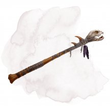
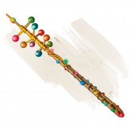
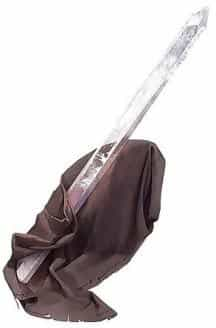
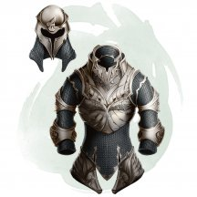
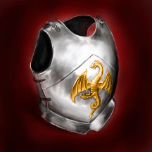
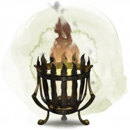
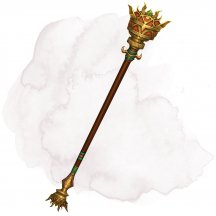
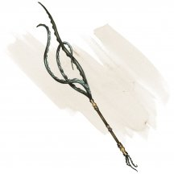
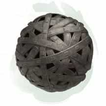
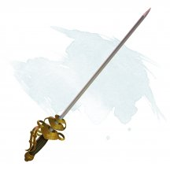

- Волшебная палочка, редкая (требуется настройка)
- Рекомендованная стоимость: 501-5 000 зм
У этой волшебной палочки 7 зарядов для использования описанными ниже свойствами. Она ежедневно восстанавливает 1к6 + 1 заряд на рассвете. Если вы истратили последний заряд в палочке, бросьте к20. Если выпадет «1», палочка рассыплется в пыль и уничтожится.
Приказ. Если вы держите эту палочку, вы можете действием потратить 1 заряд, чтобы приказать другому существу убежать или упасть, как заклинанием приказ [command] (Сл спасброска 15).
Конус страха. Если вы держите эту палочку, вы можете действием потратить 2 заряда, чтобы кончик палочки испустил 60-футовый конус янтарного света. Все существа в конусе должны преуспеть в спасброске Мудрости Сл 15, иначе они станут испуганными вами на 1 минуту. Будучи испуганным таким образом, существо обязано тратить ходы на то, чтобы переместиться максимально далеко от вас, и оно не может добровольно переместиться в пространство в пределах 30 футов от вас. Оно также не может совершать реакции. Действием существо может использовать только Рывок или пытаться освободиться от эффекта, препятствующего его передвижению. Если двигаться некуда, существо может использовать действие Уклонение. В конце каждого своего хода существо может повторять спасбросок, оканчивая эффект на себе при успехе.
Магические предметы

- Волшебная палочка, редкая (требуется настройка заклинателем)
- Рекомендованная стоимость: 501-5 000 зм
У этой волшебной палочки 7 зарядов. Если вы её держите, вы можете действием потратить 1 заряд и выбрать цель в пределах 120 футов. Цель должна быть существом, предметом или точкой в пространстве. Бросьте к100 и определите последствия с помощью таблицы.
Если эффект накладывает заклинание, Сл спасброска от него равна 15. Если обычно у этого заклинания есть дистанция в футах, то эта дистанция становится равной 120 футам. Если эффект покрывает площадь, то вы должны сделать центром заклинания цель и включить её в качестве цели заклинания. Если эффект может воздействовать на несколько разных субъектов, Мастер случайным образом выбирает, кто станет целью. Палочка ежедневно восстанавливает 1к6 + 1 заряд на рассвете. Если вы истратили последний заряд в палочке, бросьте к20. Если выпадет «1», палочка рассыплется в пыль и уничтожится.
к100 Эффект 01-05 Вы накладываете заклинание замедление [slow]. 06-10 Вы накладываете заклинание огонь фей [faerie fire]. 11-15 Вы становитесь ошеломлённым до начала своего следующего хода и считаете, что только что произошло что-то невероятное. 16-20 Вы накладываете заклинание порыв ветра [gust of wind]. 21-25 Вы накладываете заклинание обнаружение мыслей [detect thoughts] на выбранную цель. Если вы целились не в существо, то получаете урон психической энергией 1к6. 26-30 Вы накладываете заклинание зловонное облако [stinking cloud]. 31-33 Область в пределах 60 футов от цели заполнятся сильным ливнем. Эта область становится слабо заслонённой. Ливень идёт до начала вашего следующего хода. 34-36 В ближайшем свободном пространстве у цели появляется животное. Животное не находится под вашим контролем и действует так, как уместно. Бросьте к100, чтобы определить, кто появился. При результате 01–25 появляется носорог [rhinoceros]; при результате 26–50 появляется слон [elephant]; при результате 51–100 появляется крыса [rat]. 37-46 Вы накладываете заклинание молния [lightning bolt]. 47-49 Область в пределах 30 футов заполняют 600 огромных бабочек. Это пространство становится сильно заслонённым. Бабочки остаются на 10 минут. 50-53 Вы увеличиваете цель, как если бы наложили заклинание увеличение/уменьшение [enlarge/reduce]. Если на цель не действует это заклинание, или если вы целились не в существо, то целью становитесь вы. 54-58 Вы накладываете заклинание тьма [darkness]. 59-62 На земле в пределах 60 футов от цели вырастает трава. Если трава там уже была, то она вырастает в десять раз больше своего обычного размера и остаётся такой 1 минуту. 63-65 Один предмет на выбор Мастера переносится на Эфирный План. Этот предмет никто не должен ни носить, ни нести, он должен находиться в пределах 120 футов от цели, и не должен превышать 10 футов ни по одному из линейных размеров. 66-69 Вы уменьшаетесь, как если бы наложили на себя заклинание увеличение/уменьшение [enlarge/reduce]. 70-79 Вы накладываете заклинание огненный шар [fireball]. 80-84 Вы накладываете на себя заклинание невидимость [invisibility]. 85-87 На цели вырастают листья. Если в качестве цели вы выбрали точку в пространстве, то листья вырастают на ближайшем к этой точке существе. Если листья не оборвать, они побуреют и опадут через 24 часа. 88-90 Из кончика палочки линией длиной 30 футов и шириной 5 футов выстреливают 1к4 × 10 драгоценных камней, стоящих по 1 зм каждый. Каждый камень причиняет дробящий урон 1, и общий урон от камней поровну делится между всеми существами в этой линии 91-95 От вас исходит 30-футовая вспышка переливающегося света. Вы и все существа в этой области, способные видеть, должны преуспеть в спасброске Телосложения Сл 15, иначе вы станете ослеплённым на 1 минуту. Существа могут повторять спасброски в конце каждого своего хода, оканчивая эффект на себе при успехе. 96-97 Кожа цели становится ярко-синей на 1к10 дней. Если вы выбрали точку в пространстве, то эффект действует на ближайшее к этой точке существо. 98-00 Если вы целились в существо, оно должно совершить спасбросок Телосложения Сл 15. Если вы целились не в существо, то сами становитесь целью и должны совершить спасбросок. Если спасбросок провален на 5 или больше единиц, цель мгновенно превращается в камень. При просто проваленном спасброске цель становится опутанной и начинает превращаться в камень. Будучи опутанной этой магией, цель должна повторить спасбросок в конце своего следующего хода, становясь окаменевшей при провале или оканчивая эффект при успехе. Окаменение длится, пока цель не будет освобождена заклинанием высшее восстановление [greater restoration] или подобной магией.
- Чудесный предмет, редкий (требуется настройка)
- Рекомендованная стоимость: 501-5 000 зм
Я не советую судить о чем-либо по внешнему виду. Однако, если предмет выглядит так, будто он кричит, я советую проверить его на наличие проклятий.
Каждый из этих черных поножей украшен изображениями чудовищных черепов, вопящих от ужаса.
Поножи имеют 3 заряда. Надевая эти поножи, вы можете бонусным действием потратить 1 заряд, увеличивающий вашу скорость ходьбы на 30 футов, и давая вам преимущество на спасброски Ловкости. Эти эффекты действуют в течение 1 минуты. Ежедневно на рассвете поножи восстанавливают 1к3 израсходованных зарядов.
Проклятие. Эти поножи прокляты, и если вы настроитесь на них, проклятие распространится и на вас. Пока проклятие не будет снято при помощи заклинания снятие проклятия [remove curse] или подобной магией.
Вы с помехой совершаете спасброски против состояния испуганный. Всякий раз, когда вы начинаете свой ход испуганным, поножи издают пронзительный крик. Вы и каждое существо в пределах 10 футов от вас должны совершить спасбросок Телосложения Сл 15, получая 9 (2к8) урона звуком при провале или половину этого урона при успехе.
- Чудесный предмет, редкий (требуется настройка)
- Рекомендованная стоимость: 501-5 000 зм
Пока вы носите эту глазную повязку, вы получаете следующие преимущества:
- Вы получаете преимущество на проверки Мудрости (Восприятие), полагающиеся на зрение.
- Если у вас есть особенность «Чувствительность к солнечному свету», то вы становитесь не подвержены ей.
- Вы невосприимчивы к магии, позволяющей читать мысли других или определять, лгут ли они. Существа смогут связываться телепатически с вами, только с вашего позволения.

- Чудесный предмет, редкий (требуется настройка)
- Рекомендованная стоимость: 501-5 000 зм
Девятнадцатидюймовый осколок кварца, созданный каменными гигантами библиотекарями Грейвенхоллоу, даёт вам преимущество при проверках Интеллекта (Расследование), пока находится у вас.
У кристалла 10 зарядов. Держа его, вы можете потратить действие, чтобы использовать часть его зарядов для накладывания с его помощью одного из хранящихся в нем заклинаний: разговор с животными [speak with animals] (2 заряда), разговор с мёртвыми [speak with dead] (4 заряда), разговор с растениями [speak with plants] (3 заряда).
Когда вы накладываете заклинание школы Прорицания, вы можете использовать кристалл вместо одного материального компонента, который в обычном случае потреблялся бы этим заклинанием, ценой в 1 заряд за каждый уровень заклинания. Кристалл не поглощается заклинанием при таком использовании.
Кристалл восстанавливает 1к6 + 4 израсходованных зарядов ежедневно на рассвете. Если вы истратили последний заряд кристалла, совершите бросок к20. При результате 1, кристалл обращается в пыль и исчезает навсегда.
- Чудесный предмет, редкий (требуется настройка волшебником)
- Рекомендованная стоимость: 501-5 000 зм
Эта толстая обожжённая книга заклинаний пахнет дымом и озоном, а по краям её страниц потрескивают искры энергии. Найденная книга содержит следующие заклинания: волна грома [thunderwave], волшебная стрела [magic missile], Леомундова хижина [Leomund’s tiny hut], огненный шар [fireball], порыв ветра [gust of wind], предосторожность [contingency] и силовая стена [wall of force]. Эта книга функционирует для вас как книга заклинаний.
Когда вы держите книгу, вы можете использовать её в качестве заклинательной фокусировки для ваших заклинаний волшебника.
Книга имеет 3 заряда и ежедневно восстанавливает 1к3 заряда на рассвете. Вы можете использовать заряды следующими способами, пока держите книгу:
- Если вы потратите 1 минуту на изучение книги, вы можете израсходовать 1 заряд и заменить одно из своих подготовленных заклинаний волшебника на другое заклинание из книги. Новое заклинание должно принадлежать школе Воплощения.
- Когда одно существо, которое вы можете видеть, получает урон от наложенного вами заклинания школы Воплощения, вы можете реакцией потратить 1 заряд, чтобы нанести дополнительно 2к6 урона силовым полем этому существу и сбить его с ног, если оно Большое или меньше.
- Оружие (секира), редкое (требуется настройка)
- Рекомендованная стоимость: 501-5 000 зм
Металлическое лезвие этой секиры украшено резными изображениями обезглавленных свежевателей разума. Вы получаете бонус +1 к броскам атаки и урона, совершённых этой секирой.
Аберрация, по которой попали этой секирой получает дополнительный 1к12 рубящего урона. Если Аберрация в данный момент схватила существо, она должна преуспеть в спасброске Силы Сл 15 или отпустит каждое существо, которое она схватила.
- Чудесный предмет, редкий
- Рекомендованная стоимость: 150 зм
Это большой драгоценный камень, стоящий 150 зм.
Проклятие. Камень проклят, но его магическая природа скрыта; обнаружение магии [detect magic] не обнаруживает её. Заклинание опознание [identify] раскрывает истинную природу камня. Если вы используете действие Рывок или Отход, пока камень находится при вас, его проклятие активируется. Пока проклятие не будет снято при помощи заклинания снятие проклятия [remove curse] или подобной магии, ваша скорость уменьшается на 5 футов, а максимальная нагрузка и максимальная грузоподъемность уменьшаются вдвое. Вы также не хотите больше расставаться с камнем.
- Чудесный предмет, редкий (требуется настройка волшебником)
- Рекомендованная стоимость: 501-5 000 зм
Для вас это магическая книга заклинаний, а для всех остальных эта книга выглядит как книжечка многословной любовной беллетристики. Действием вы можете изменить внешний вид книги и сюжет романа.
Найденная книга содержит следующие заклинания: безмолвный образ [silent image], воображаемая сила [phantasmal force], мираж [hallucinatory terrain], образ [major image], Нистулова ложная аура [nystul's magic aura], отражения [mirror image] и фальшивый двойник [mislead]. Эта книга функционирует для вас как книга заклинаний.
Когда вы держите книгу, вы можете использовать её в качестве заклинательной фокусировки для ваших заклинаний волшебника.
Книга имеет 3 заряда и ежедневно восстанавливает 1к3 заряда на рассвете. Вы можете использовать заряды следующими способами, пока держите книгу:
- Если вы потратите 1 минуту на изучение книги, вы можете израсходовать 1 заряд и заменить одно из своих подготовленных заклинаний волшебника на другое заклинание из книги. Новое заклинание должно принадлежать школе Иллюзии.
- Когда существо, которое вы можете видеть, совершает проверку Интеллекта (Расследование), чтобы распознать истинную природу заклинания иллюзии, которое вы накладываете, или совершает спасбросок против заклинания иллюзии, которое вы накладываете, вы можете реакцией потратить 1 заряд и создать помеху на бросок.
- Чудесный предмет, редкий
- Рекомендованная стоимость: 501-5 000 зм
Этот двенадцатигранный металлический кубик шириной 12 дюймов в поперечнике с выгравированными цифрами от 1 до 12 на его пятиугольных гранях. Внутри додекаэдра находится магический заводной механизм, который гудит и щелкает при броске.
Действием додекаэдр можно метнуть на расстояние до 60 футов. После того как кубик останавливается прокатившись по поверхности не менее 10 футов, возникает случайный магический эффект. Если эффект требует наличия цели, но в пределах досягаемости нет ни одной подходящей цели — ничего не происходит. Накладываемые додекаэдром заклинания не требуют никаких компонентов. Бросьте к12 и сверьтесь с таблицей для определения эффекта.
к12 Эффект 1-2 Додекаэдр взрывается и уничтожается. Все существа в пределах 20 футов от додекаэдра должны совершить спасбросок Ловкости Сл 13, получая 40 (9к8) урона силовым полем при провале или половину от этого урона при успехе. 3-4 Додекаэдр накладывает на себя заклинание свет [light]. Додекаэдр находится под эффектом заклинания до тех пор, пока кто-то не дотронется до него. 5-6 Додекаэдр накладывает заклинание луч холода [ray of frost] (+5 к попаданию) на случайное существо, не находящееся за полным укрытием в пределах 60 футов от себя. 7-8 Додекаэдр накладывает заклинание электрошок [shocking grasp] (+5 к попаданию) на первое дотронувшееся до него после броска существо. 9-10 Додекаэдр накладывает на себя заклинания тьма [darkness]. Продолжительность эффекта 10 минут. 11-12 Первое дотронувшееся до додекаэдра после броска существо на 1 час получает 1к10 временных хитов.
- Доспех (любой лёгкий), редкий (требуется настройка)
- Рекомендованная стоимость: 501-5 000 зм
Этот прекрасный набор бело-серебряных доспехов украшен руной «Ветер» на груди.
Пока вы носите этот доспех, вы совершаете с преимуществом проверки Ловкости (Акробатика) и спасброски Ловкости, поскольку ваши движения поддерживаются нежными потоками ветра.
Пробуждение руны. Действием вы можете призвать руну брони, чтобы наложить с её помощью заклинание стена ветров [wind wall] (Сл спасброска 15). После того, как руна была пробуждена, она не может быть пробуждена снова до следующего рассвета.

- Доспех (легкий, средний, тяжелый), редкий (требуется настройка)
- Рекомендованная стоимость: 501-5 000 зм
Вы получаете сопротивление одному из видов урона, пока носите этот доспех. Мастер выбирает вид урона сам или случайным образом.
- Доспех (Проклёпанный кожаный), редкий (требуется настройка)
- Рекомендованная стоимость: 501-5 000 зм
Этот чёрный кожаный доспех с шипами имеет красный оттенок. Надевая этот доспех, вы можете бонусным действием призвать свою проекцию в незанятом пространстве находящимся в пределах 30 футов. Проекция, является вашей полупрозрачной копией, обладающей иммунитетом ко всему урону и состояниям, и вы можете совершать атаки и накладывать заклинания, не имеющие дистанции «на себя», как если бы вы находились в пространстве проекции. Проекция исчезает в конце вашего хода. Как только вы совершаете это бонусное действие, его нельзя будет использовать снова до следующего рассвета.
Проклятие. Эти доспехи прокляты, и если вы настроитесь на них, проклятие распространится и на вас. Пока вы прокляты, вы не желаете расставаться с доспехами. Снятие доспеха не оканчивает проклятие. Будучи проклятым таким образом, вы чувствуете себя оторванным от своего тела, постоянно слыша шёпот, призывающий вас присоединиться к ним. Всякий раз, когда вы заканчиваете продолжительный отдых пока вы прокляты, вы должны совершать спасбросок Харизмы Сл 11. При провале ваша душа извлекается из вашего тела и оказывается в ловушке в объекте на другом плане существования. Объект и его местоположение определяются Мастером (но это может быть и карточный домик [house of Cards]). Пока ваша душа находится в данной ловушке, ваше тело входит в состояние приостановленной жизнедеятельности. Время для вас не течёт, и вы не стареете. Уничтожение объекта освобождает вашу душу; в противном случае только заклинание исполнение желаний [wish] может вернуть вашу душу в ваше тело.
Изготовленная из прочной, но гибкой кожи, шипованная кожа усилена плотно расположенными заклепками или шипами.
- Доспех (латы), редкий (требуется настройка)
- Рекомендованная стоимость: 501-5 000 зм
Когда вы надеваете этот доспех, вы получаете сопротивление одному из следующих видов урона: дробящий, колющий или рубящий. Мастер определяет вид урона самостоятельно или случайным образом.
Проклятье. Этот доспех проклят, но это становится понятно только когда на него используется заклинание опознание [identify] или когда вы настраиваетесь на него. Настройка на доспех проклинает вас до тех пор, пока вы не станете целью заклинания снятие проклятья [remove curse] или похожей магии. Снятие доспеха не прекращает проклятье. Пока вы прокляты, вы получаете уязвимость к двум оставшимся видам урона, исключая тот, к которому доспех даёт сопротивление.
- Доспех (лёгкий, средний, тяжёлый), редкий (требуется настройка)
- Рекомендованная стоимость: 501-5 000 зм
Эти сложные доспехи в оттенках серого были выкованы в Плане Теней и пропитаны мраком этого измерения.
Нося эту броню, вы получаете преимущество в спасбросках, которые вы совершаете, чтобы избежать или окончить на себе состояние испуган.
Доспехи имеют 3 заряда. Вы можете действием потратить 1 заряд для наложения заклинания умиротворение [calm emotions] (Сл спасброска 15) из этих доспехов. Доспехи восстанавливают 1к3 израсходованных зарядов ежедневно на рассвете.
- Доспех (лёгкий, средний, тяжёлый), редкий (требуется настройка)
- Рекомендованная стоимость: 501-5 000 зм
Эти яркие, цветочные доспехи были выкованы в Царстве Фей и наполнены чарующей магией этого плана.
Нося эту броню, вы получаете преимущество в спасбросках, которые вы совершаете, чтобы избежать или окончить на себе состояние очарован.
Доспехи имеют 3 заряда. Вы можете действием потратить 1 заряд для наложения заклинания принуждение [compulsion] (Сл спасброска 15) из этих доспехов. Доспехи восстанавливают 1к3 израсходованных зарядов ежедневно на рассвете.
- Чудесный предмет, редкий (требуется настройка кованым)
- Рекомендованная стоимость: 501-5 000 зм
Доцент - это маленькая металлическая сфера, около 2 дюймов в поперечнике, усеянная драконьими осколками. Чтобы настроиться на доцента, вы должны разместить его где-то на своем теле, например в груди или глазнице.
Разум. Доцент-это разумный предмет любого мировоззрения с Интеллектом 16, Мудростью 14, Харизмой 14. Он воспринимает мир через ваши органы чувств. Он общается с вами телепатически и может говорить, читать и понимать любой язык, который он знает (см. «Случайные свойства» ниже).
Жизнеобеспечение. Всякий раз, когда вы заканчиваете свой ход с 0 хитами, доцент может совершить проверку Мудрости (Медицина) с бонусом +6. Если эта проверка успешна, доцент стабилизирует вас.
Случайные свойства. Доцент обладает следующими свойствами:
- Языки. Доцент знает Общий, язык Великанов и дополнительно 1к4 языков, по выбору Мастера. Если доцент знает меньше шести языков, то он может выучить новый язык после того, как услышит или прочтет его через ваши органы чувств.
- Навыки. Доцент получает бонус +7 к одному из следующих навыков (бросьте к4): (1) Магия, (2) История, (3) Расследование или (4) Природа.
- Заклинания. Доцент знает одно из следующих заклинаний и может использовать его по своему желанию, без затрат материальных компонентов для накладывания (бросьте к6): (1-2) обнаружение зла и добра [detect evil and good] или (3-6) обнаружение магии [detect magic]. Доцент сам решает, когда использовать заклинание.
Индивидуальность. Доцент предназначен для консультирования и оказания помощи кованому, к которому он прикреплен. Одна из основных функций доцента - быть переводчиком. Свойства доцента находятся под его контролем, и если у вас плохие отношения с вашим доцентом, он может отказать вам в помощи.

- Доспех (кираса), редкий
- Рекомендованная стоимость: 501-5 000 зм
На этой кирасе +1 изображен золотой дракон. Созданная для героя Невервинтера, человека по имени Тергон, она позволяет владельцу совершать с преимуществом спасброски против дыхания существ, имеющих тип «дракон».

- Чудесный предмет, редкий
- Рекомендованная стоимость: 501-5 000 зм
Если в этой латунной жаровне горит огонь, вы можете действием произнести командное слово и призвать огненного элементаля [fire elemental], как если бы наложили заклинание призыв элементаля [conjure elemental]. Жаровню нельзя использовать повторно, пока не наступит следующий рассвет.
Весит жаровня 5 фунтов.
- Жезл, редкий (требуется настройка)
- Рекомендованная стоимость: 501-5 000 зм
Герцог огненных великанов Залто нанял волшебника, чтобы тот создал несколько таких адамантиновых жезлов. Каждый из них 4 фута длинной, весит 100 фунтов и выполнен как раз по руке огненного великана [fire giant]. На одном конце жезла имеются два зубца, а другой отлит в форме рукояти.
В жезле 10 зарядов и он восстанавливает 1к6+4 использованных зарядов на рассвете. Действием вы можете схватить рукоять и, потратив 1 заряд, наложить заклинание поиск предмета [locate object] с его помощью. Если жезл использовать для обнаружения предметов, сделанных из адамантина, таких как части конструкции Вониндода, его дальность возрастает до 10 миль.

- Жезл, редкий (требуется настройка)
- Рекомендованная стоимость: 501-5 000 зм
Вы можете действием продемонстрировать жезл и потребовать послушания от всех существ на ваш выбор, видимых вами в пределах 120 футов от себя. Каждая цель должна преуспеть в спасброске Мудрости Сл 15, иначе она станет очарованной вами на 8 часов. Будучи очарованным из-за этого эффекта, существо считает вас своим истинным предводителем. Получив урон от вас или ваших спутников, или получив приказ, противоречащий её природе, цель перестаёт быть очарованной этим эффектом. Жезл нельзя использовать повторно до следующего рассвета.

- Жезл, редкий (требуется настройка)
- Рекомендованная стоимость: 501-5 000 зм
Этот изготовленный дроу жезл — магическое оружие, оканчивающееся тремя эластичными щупальцами. Держа этот жезл в руке, вы можете действием направить каждое щупальце, чтобы оно атаковало существо в пределах 15 футов от вас. Каждое щупальце совершает бросок рукопашной атаки с бонусом +9. При попадании щупальце причиняет дробящий урон 1к6. Если вы попали по одной цели всеми тремя щупальцами, она должна совершить спасбросок Телосложения Сл 15. При провале на 1 минуту скорость существа уменьшается вдвое, оно получает помеху для спасбросков Ловкости и не может совершать реакции. Более того, в каждом своём ходу оно может или совершать действие или бонусное действие но не то и другое одновременно. В конце каждого своего хода оно повторяет спасбросок, оканчивая эффект на себе при успехе.

- Чудесный предмет, редкий
- Рекомендованная стоимость: 501-5 000 зм
Это ржавая железная сфера диаметром 3 дюйма, весящая 1 фунт. Вы можете действием произнести командное слово и бросить сферу в существо с размером не больше Огромного, которое видите в пределах 60 футов от себя. В полёте сфера распадается на отдельные металлические ленты.
Совершите бросок дальнобойной атаки с бонусом броска атаки, равным модификатору Ловкости плюс ваш бонус мастерства. При попадании цель становится опутанной, пока вы не произнесёте командное слово ещё раз бонусным действием. После повторного произношения командного слова или промаха атаки ленты сжимаются и снова становятся сферой.
Любое существо, в том числе и опутанное, может действием совершить проверку Силы Сл 20, чтобы порвать ленты. При успехе предмет уничтожается, а удерживаемое существо освобождается. При провале все дальнейшие попытки этого существа автоматически проваливаются в течение 24 часов.
Железные ленты нельзя использовать повторно до следующего рассвета.
- Оружие (рапира), редкое
- Рекомендованная стоимость: 501-5 000 зм
Если у вас при броске атаки этим магическим оружием выпадает «20», цель получает 7 дополнительного урона того же вида, который причиняет это оружие.

- Оружие (любое), редкое
- Рекомендованная стоимость: 501-5 000 зм
Если у вас при броске атаки этим магическим оружием выпадает «20», цель получает дополнительные 7 урона того вида, который наносит это оружие.